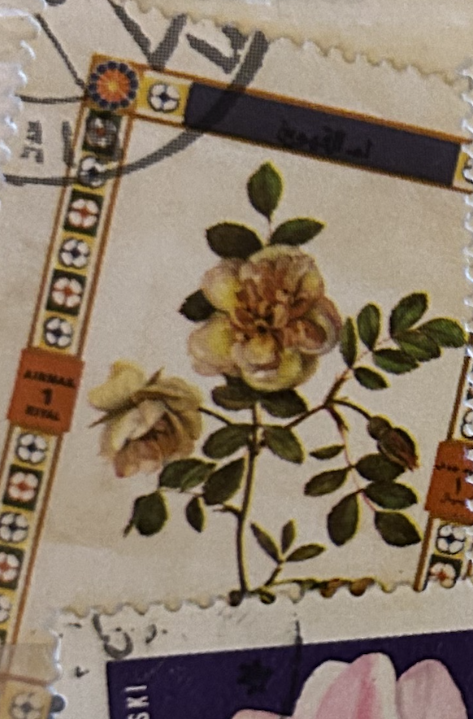
| SOURCE | TITLE| IMAGE MATCH | click to source page |
| Alamy | UMM AL-QUWAIN - CIRCA 1972: a stamp printed in the Umm al-Quwain shows Rose variety, Flower, circa 1972 Stock Photo - Alamy |  |
| Pngtree | Rose Postcard Photos, Download HD Pictures - Pngtree |  |
| eBay | Manama 1969 Roses Flowers Plants Nature 6v set Imperf MNH | eBay | 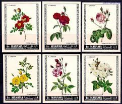 |
| Free Vintage Floral Art Prints | FREE Rose Print -1960's Floral Botanical Print, Vintage Flower Print ... | 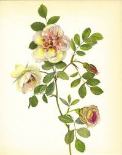 | |
| Etsy | Vintage Rose Bouquet Art Print | Antique Floral Botanical Illustration | Shabby Chic Wall Decor |french Cottagecore, Botanical Nursery Print - Etsy Israel | 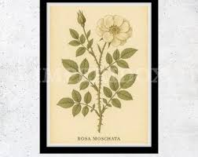 |
| Alamy | Al letter hi-res stock photography and images - Alamy | 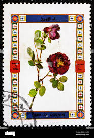 |
| Amazon.com | Amazon.com: Ajman 405A-410A (Complete.Issue.) fine Used/Cancelled 1969 Rosen (Stamps for Collectors) Plants/Mushrooms : Toys & Games |  |
| Alamy | Thorn letter hi-res stock photography and images - Alamy | 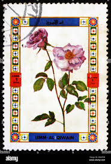 |
| eBay | AJMAN 1969 FLOWERS/ROSES SET OF 6 STAMPS PERF. MNH | eBay | 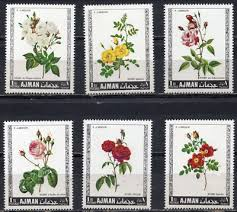 |
| The Old Print Shop | Fig. 1. Rosa sempervirens. Fig. 2. Rosa bracteata. / Rosier toujours vert. Rosier a Bractees. T. 7. No. 13. | The Old Print Shop | 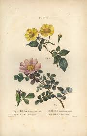 |
| MutualArt | Johann Wilhelm Weinmann | Cacaos Cacavifera and Cacaos Minor (Plates 277 and 278 from Phytanthoza Iconographia) | MutualArt | 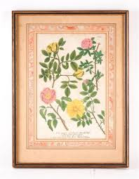 |
| Meisterdrucke | German School • Buy exclusive fine art prints online |  |
| Chairish | The Saturday Book 11th Year" 1951 Russell, Leonard [Edited By] | Chairish | 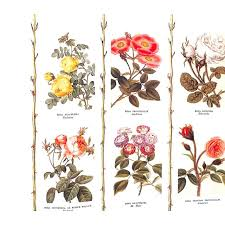 |
| Fine Art America | Hortus Eystettensis Photos for Sale - Fine Art America | 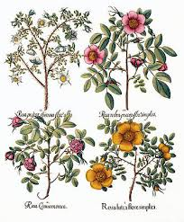 |
| Amazon.com | Amazon.com: Rosa lutea flore simplici [Austrian Brier]; Rosa Cinnamomea [Cinnamon Rose]; Rosa rubra prµcox flore simplici [Wild Alpine Rose]; Rosa prµcox spinosa flore albo [Burnet Rose] : BESLER, Basil (1561-1629): Arte Coleccionable | 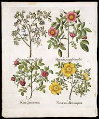 |
| MeisterDrucke - Art Prints, Paintings & Reproductions | Vaillant's sweetbriar rose, Rosa rubiginosa variety | 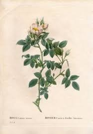 |
| georgeglazer.com | Botanical, Art, Weinmann, Phytanthoza Iconographia, 1737-1745 (Sold) | George Glazer Gallery, Antiques | 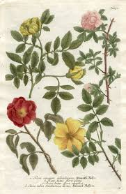 |
| Alamy | Photo of a postage stamp from Ajman United Arab Emirates with an image of roses 1969 Stock Photo - Alamy |  |
| Roses Postage Stamp Set // Manama 1969 Used Vintage Postal | Etsy | Stamp, Postage stamps, Stamp set | 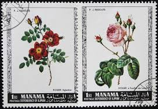 | |
| HipStamp | Manama 1969 Sc 242-7 flower CTO BLK(4) set FU | Middle East - Bahrain, General Issue Stamp / HipStamp |  |
| eBay | Ajman Lot "Blumen" postfrisch ** (B-177) | eBay | 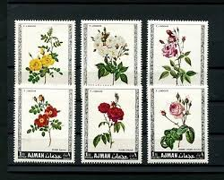 |
| lotsearch.net | Basil Besler - lots in our price database - LotSearch | 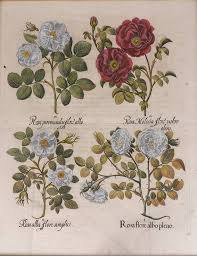 |
| sciencephotogallery.com | Rose Flowers by Georgette Douwma / Science Photo Library | 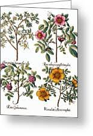 |
| eBay | Vintage Framed Floral Print Rambler Rose Matted with Glass Signed | eBay | 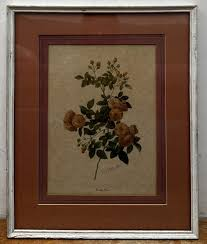 |
| Etsy | ROSE Swap Cards / 2 Vintage Floral Playing Cards Flowers ROSES Great for Mixed Media, Collage, Scrapbooking, Journals, Etc. - Etsy | 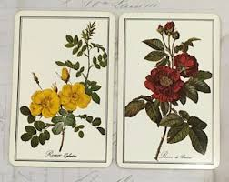 |
| Free stamp catalogue | Stamps with the theme Flowers & Plants - Freestampcatalogue.com - The free online stampcatalogue with over 500.000 stamps listed. |  |
| Shutterstock | Ajman Circa 1969 Cancelled Postage Stamp Stock Photo 2674182611 | Shutterstock | 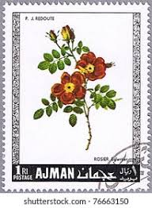 |
| Entoto Natural Park | Podocarpus falcatus (P. gracilior) | 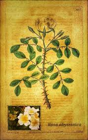 |
| SuperStock | Damask rose, Rosa celsiana, and dog rose with shiny leaves, Rosa canina. Handcoloured illustration by Pancrace Bessa stipple engraved by Teillard from Charles Malo's "Histoire des Roses," Paris, 1818. A gift book for ladies with 12 miniature botanicals by ... | 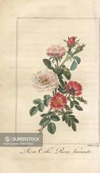 |
| MutualArt | Basilius Besler | Botanical Illustrations From Hortus Eystettensis | MutualArt | 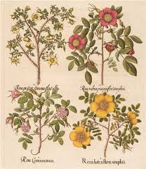 |
| Umm-Al-Qiwain |  | |
| Etsy | Vintage Framed Botanical Print: Redoute 'rosa Kamtschatica' - 1980s Decor - Etsy | 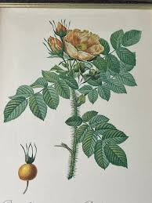 |
| keraliyaayurveda.com | 1970s Custom Framed Redouté Collection Les Roses Botanical Prints 19”x24” -a Pair | 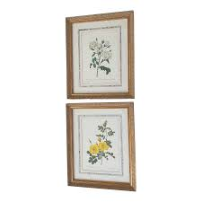 |
| Panteek Antique Prints | Willmott Rose Prints Genus Rosa 1914 | Panteek Antique Prints | 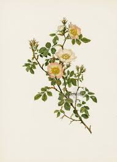 |
| Posterazzi | Streaked Flowered Marica With White Yellowà Poster Print By ® Florilegius / Mary Evans - Item # VARMEL10935107 - Posterazzi | 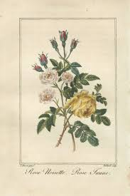 |
| Roses from Johann Weinmann's Phytanthoza Iconographia 1737. #weinmann #roses #rareprints #antiqueprints #botanical #flowers #regensburg #germany #garden | 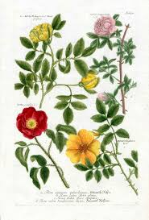 | |
| Joel Oppenheimer Gallery | Besler Pl. 99, Eglantine (sweetbriar), Common dog rose, et al | By Oppenheimer Editions | Hortus Eystettensis – Oppenheimer Editions | 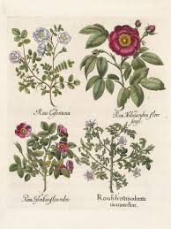 |
| The Old Print Shop | Cassia corymbosa. / Casse a fleurs en corymbe. T. 6. No. 32. | The Old Print Shop | 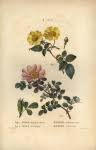 |
| WordPress.com | Pleasures of the Garden, A Literary Anthology – Part 3 of 4 | Nature as Art and Inspiration | 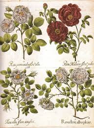 |
| Victoria and Albert Museum | Two dog roses and a lackey moth caterpillar | unknown | Le Moyne de Morgues, Jacques | V&A Explore The Collections | 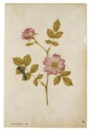 |
| Etsy | 1825 Flower Etching, Dog Rose Antique Botanical Hand Colored | Rosa Canina | Beautiful Garden Framable Wall Art - Etsy | 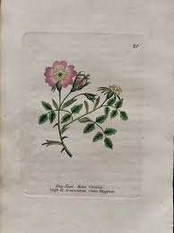 |
| Shutterstock | Plant-forms Ornamentally Treated Sweet Briar Vintage Stock Illustration 2655262341 | Shutterstock | 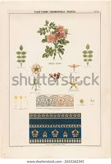 |
| Find Your Stamps Value | Value of deutsche bundespost 120' stamps | 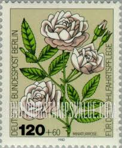 |
| eBay | SOMALIA Mi 654 - Garden Roses "Pink Blossom" (pb58205) | eBay | 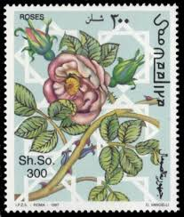 |
| Fine Art America | Hybrid Rose Drawings for Sale - Fine Art America | 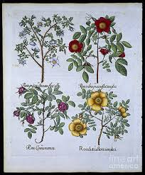 |
| Look and Learn History Picture Archive | Historical Picture Archive – 'flowers' historical pictures (exact matches) in Premium collections | Look and Learn | 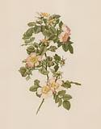 |
| eBay | Floral Vintage 1960s GOODBYE Card, White Rose Flowers by ANNE MARIE TRECHSLIN +✉ | eBay | 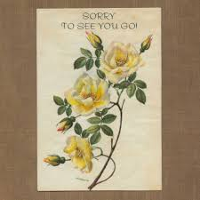 |
| Wikipedia | ملف:Stamp of Ajman - 1969 - Colnect 674336 - Eglantier.jpeg - ويكيبيديا | 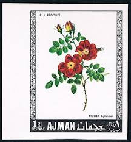 |
| georgeglazer.com | Botanical, Art, Besler, Hortus Eystettensis, Roses, Framed Antique Print, Germany, 17th Century | George Glazer Gallery, Antiques | 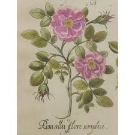 |
| My Modern Met | This 17th-Century Book of Plants Changed Botanical Illustration Forever | 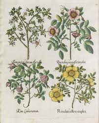 |
| Art.com | Wild Rose Botanical Study, 1897 (Lithograph) Giclee Print - Eugene Grasset | Art.com | 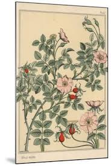 |
| Bridgeman Prints | Rosa Hibernica by English School | 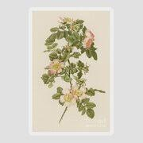 |
| Prints With A Past | Antique Rose Prints - Ellen Willmott's Genus Rosa | 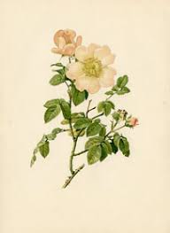 |
| Allposters | Sweet Briar Rose Prints - Mary Lawrence | AllPosters.com | 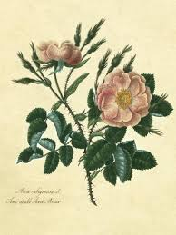 |
| Album Online | Four variets of Dog Rose, from 'Hortus Eystettensis', by Basil Besler (1561-1629), pub. 1613 (hand-c - Album alb4002185 | 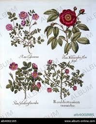 |
| eBay | AJMAN MNH FLOWERS | eBay | 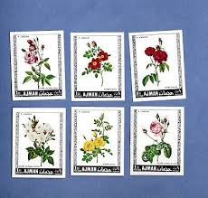 |
| Invaluable.com | Sold at Auction: Basilius Besler, Basilius Besler | 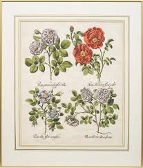 |
| lastdodo.com | Belle Rubanée (Provins) 14 (1990) - Belgium - LastDodo | |
| Pictura Antique Prints | Antique Print-INSECTS-ROSE-WILD-ROSA-CATERPILLAR-PL.LVII-Merian-1730 · Pictura Antique Prints |
{kind=link}